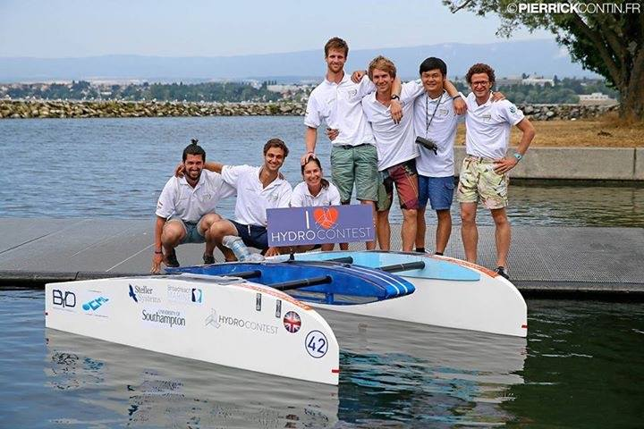
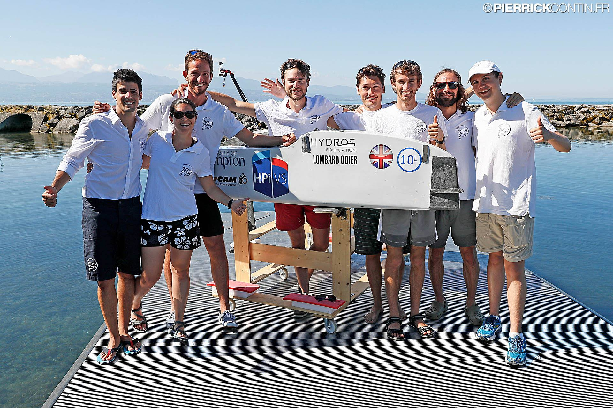

|
Hydro Contest
Hydro Contest is the first international student competition dedicated to naval energy efficiency. Student teams from different countries join this competition with their own design. And they need build their own boat(s) to compete in three categories: light weight speed race, heavy weight speed race and long distance race. Each teams were given the same battery and engine for their boat. The fastest team get the prize for the speed race, and most endurance team the get the distance race prize.
Team of Southampton University 2015
|
 |
In 2015, seven of us with different background (in naval architecture, computation fluid dynamic, yacht design, ocean engineering and marine engineering) voluntarily formed a team. We represent University of Southampton as the first UK team in this competition. I was working on electrical system including radio control system, rudder actuator and engine speed controller.
Our boat is shown on the left. This hydrofoil catamaran was initially designed as luxury yacht by Pietro and Matthieu as their final design project in Solent University. To overcome logistic difficulty, hydrofoil for lightweight race is interchangeable with a underwater pod for heavy weight race. A single pod can carry to up 100 kg payload. The electrical engine was integrated with rudder like a Z-pod. It was the fastest and lightest boat on the water.
Report on Faculty Blog
|
From left to right: Javier, Pietro, Mario, Nicholas, Matthieu, Me, Louis
Credit: Pierrick Contin
Team of Southampton University 2016
|
 |
Based on the lessons we have learnt in 2015, we completely redesign the structure of central pod to deal with transverse strength issue. And I help to design a more reliable electronic system to address overheat issue. Our team applied the most cutting technology including autopilot system and real-time video transmission system on board.
Among 22 teams in this edition, we are:
Lightweight race: 6th
Heavyweight race: 4th
Endurance race: 4th
Communications Prize Winners
Report on University Blog
|
From left to right: Jacob, Ariadna, Daniel, Tobi, Pier, Rob, Dave, Harry
Credit: Pierrick Contin (again)
Become a part of 2017 team
Would you like join us to present your idea in efficient shipping? Join 2017 Hydro team.
Our team is formed by students from 1st year undergrads to PhD students. And you can always find you position in our team.
From 2017 and on, I am not an active member anymore, but I will work as consultant in electronics system for the team.
Support our team
We are looking for sponsor for our 2017 Hydro Contest team.
If you are interested please send me an email at Yu.Cao@soton.ac.uk. Our management team will get in touch with you soon.
|